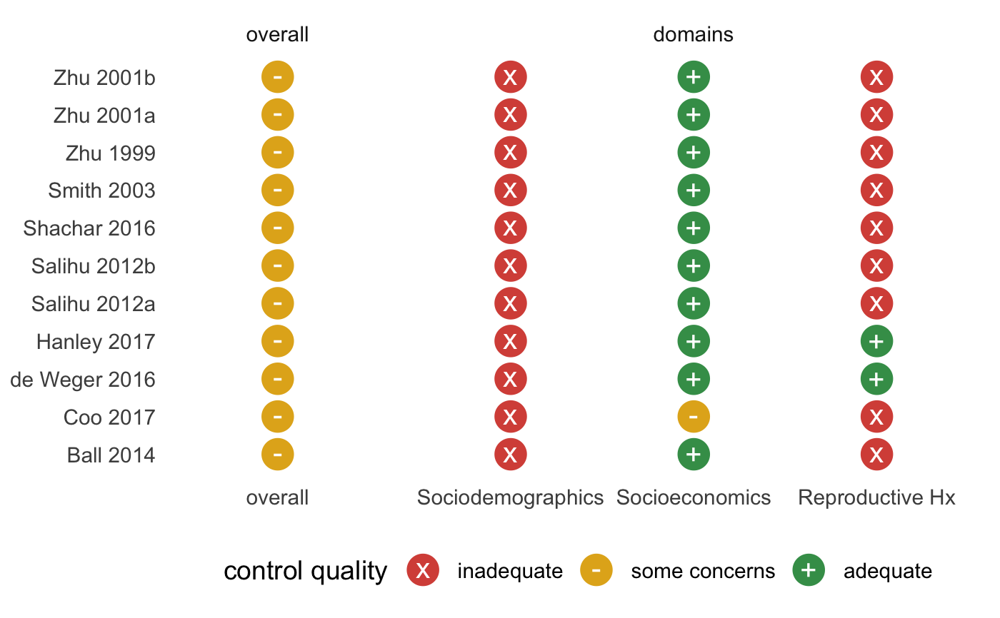

R/summarize_control_quality.R
summarize_control_quality.Rdsummarize_control_quality() allows you to summarize how well studies
control for variables within one or more domains, and how well those domains
are controlled for overall. Each logical statement is a domain and can be
named.
summarize_control_quality(.df, ..., domains = TRUE)
| .df | A data frame, usually the result of |
|---|---|
| ... | Boolean arguments to declare adequate control logic |
| domains | Logical. Include the domains in the output? If |
A tibble
summary_df <- summarize_control_quality( metaconfoundr(ipi), Sociodemographics = `Maternal age` & `Race/ethnicity` & `Marital status`, Socioeconomics = `SES category` | Insurance & Education, "Reproductive Hx" = `Prior pregnancy outcome` ) summary_df#> # A tibble: 60 x 4 #> study variable control_quality construct #> <chr> <fct> <ord> <fct> #> 1 study_1 overall some concerns overall #> 2 study_1 Sociodemographics inadequate domains #> 3 study_1 Socioeconomics adequate domains #> 4 study_1 Reproductive Hx inadequate domains #> 5 study_2 overall some concerns overall #> 6 study_2 Sociodemographics inadequate domains #> 7 study_2 Socioeconomics some concerns domains #> 8 study_2 Reproductive Hx inadequate domains #> 9 study_3 overall some concerns overall #> 10 study_3 Sociodemographics inadequate domains #> # … with 50 more rowssummary_df %>% mc_trafficlight() + theme_mc() + facet_constructs() + geom_cochrane() + scale_fill_cochrane()